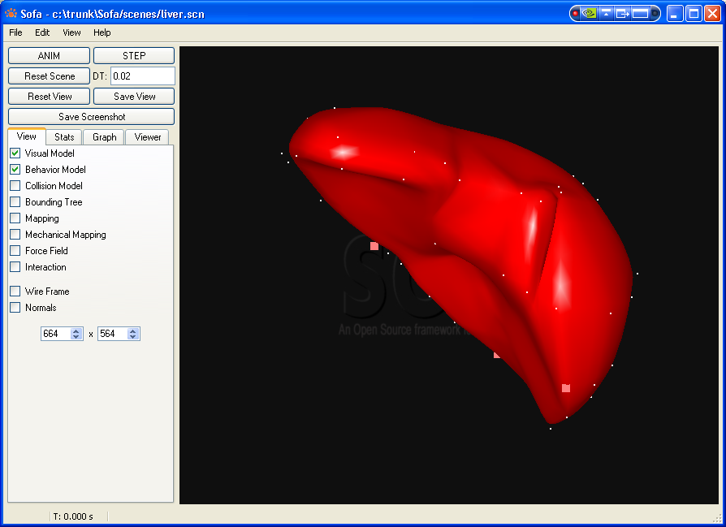
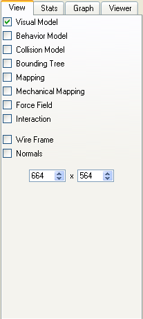
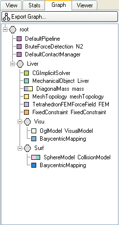
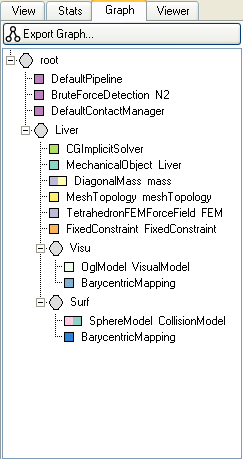
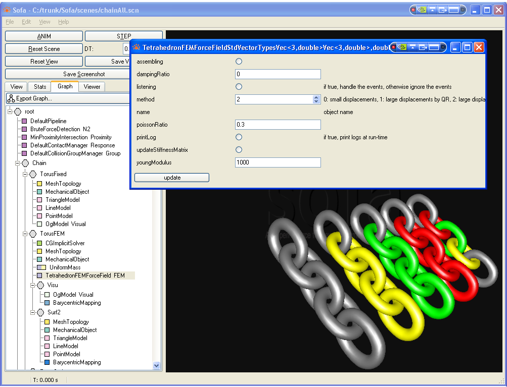

Common Interactions:
ANIM: launch the Simulation. The text field, DTsets the step of time used during the simulation.
STEP: the simulation will compute its state at the time: t+DT.
Reset Scene: reset the Simulation to the initial time, t=0.
Reset View: set your camera at initial configuration found in a view file, or default configuration.
Save View: keep in memory the position and orientation of the camera, for the next time you will load the scene.
Save Screenshot: take a picture of the current scene.
Direct interaction with the scene is possible. To do so, maintain SHIFT button pressed and click on a collision model present in the scene; A “Pick Interactor” will be created, and attached to the picked collision model, if any, with a spring.
If you release the mouse button first, the spring is removed.
If you release the SHIFT button first, the spring is fixed and exists until you pick another point in the scene.
Several tabs give more information about the current scene:
This images were taken for the scene shown above.
 

- depending on the viewer, you can control what is displayed, and the way it is.
- statistical outputs during the simulation (position and velocity for each elements, time passed at each branch of the graph, gnuplot files)
- the graph of the scene, with all the nodes. You can export this graph into a nice png file.
- the last tab, “Viewer” gives the name and information about the possibilities of the current viewer, and the shortcuts.
Double clicking on a node allows you to modify several values and change dynamically the simulation (here, the TetrahedronFEMForceField node). In some cases, you need to press theupdatebutton to apply the changes.